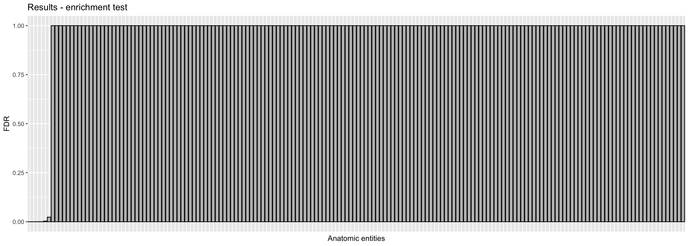

Last updated: 2020-04-20
Checks: 7 0
Knit directory: Bgee/
This reproducible R Markdown analysis was created with workflowr (version 1.6.1). The Checks tab describes the reproducibility checks that were applied when the results were created. The Past versions tab lists the development history.
Great! Since the R Markdown file has been committed to the Git repository, you know the exact version of the code that produced these results.
Great job! The global environment was empty. Objects defined in the global environment can affect the analysis in your R Markdown file in unknown ways. For reproduciblity it’s best to always run the code in an empty environment.
The command set.seed(20200417) was run prior to running the code in the R Markdown file. Setting a seed ensures that any results that rely on randomness, e.g. subsampling or permutations, are reproducible.
Great job! Recording the operating system, R version, and package versions is critical for reproducibility.
Nice! There were no cached chunks for this analysis, so you can be confident that you successfully produced the results during this run.
Great job! Using relative paths to the files within your workflowr project makes it easier to run your code on other machines.
Great! You are using Git for version control. Tracking code development and connecting the code version to the results is critical for reproducibility.
The results in this page were generated with repository version f18beb5. See the Past versions tab to see a history of the changes made to the R Markdown and HTML files.
Note that you need to be careful to ensure that all relevant files for the analysis have been committed to Git prior to generating the results (you can use wflow_publish or wflow_git_commit). workflowr only checks the R Markdown file, but you know if there are other scripts or data files that it depends on. Below is the status of the Git repository when the results were generated:
Ignored files:
Ignored: .Rhistory
Untracked files:
Untracked: Bos_taurus_Bgee_14_1/
Untracked: Drosophila_melanogaster_Bgee_14_1/
Untracked: release.tsv
Untracked: species_Bgee_14_1.tsv
Unstaged changes:
Deleted: analysis/about.Rmd
Deleted: analysis/license.Rmd
Note that any generated files, e.g. HTML, png, CSS, etc., are not included in this status report because it is ok for generated content to have uncommitted changes.
These are the previous versions of the repository in which changes were made to the R Markdown (analysis/topanat.Rmd) and HTML (docs/topanat.html) files. If you’ve configured a remote Git repository (see ?wflow_git_remote), click on the hyperlinks in the table below to view the files as they were in that past version.
| File | Version | Author | Date | Message |
|---|---|---|---|---|
| Rmd | f18beb5 | SFonsecaCosta | 2020-04-20 | Minor things |
| html | 8d821e2 | SFonsecaCosta | 2020-04-20 | Build site. |
| Rmd | 9073f83 | SFonsecaCosta | 2020-04-20 | add analysis |
library(BgeeDB)
library(biomaRt)
library(ggplot2)The TopAnat allow you to make GO-like enrichment of anatomical terms, mapped to genes by expression patterns.
In this example we will use a non-model organism Bus taurus (cattle) to run the TopAnat analysis.
In order to start the analysis in TopAnat you have to create a Bgee object, as demonstrated before in the Downlaod data section.
Note that in this example we will not specify any data type in the argument dataType, this means we will use all data types from Bgee.
targetSpecies <- Bgee$new(species = "Bos_taurus")
NOTE: You did not specify any data type. The argument dataType will be set to c("rna_seq","affymetrix","est","in_situ") for the next steps.
Querying Bgee to get release information...
NOTE: the file describing Bgee species information for release 14_1 was found in the download directory /Users/sfonseca1/Bgee. Data will not be redownloaded.
API key built: 342617eeb6e728567eeaf07855efc4fa274e6ad21dde329ecce7bd3668c4efa9f23c364808e45b7b772594a592dfe6855ff75027e7983a848ff43a25416ebe6fAfter that you should download the data for the referent species in order to allow you to perform the TopAnat analysis. The function loadTopAnatData() loads multiple files for the target species, as:
an organ relationships file
an organ names file
a gene to organs mapping file
speciesTopAnatData <- loadTopAnatData(targetSpecies)
NOTE: an organ relationships file was found in the download directory /Users/sfonseca1/Bgee/Bos_taurus_Bgee_14_1. Data will not be redownloaded.
NOTE: an organ names file was found in the download directory /Users/sfonseca1/Bgee/Bos_taurus_Bgee_14_1. Data will not be redownloaded.
NOTE: a gene to organs mapping file was found in the download directory /Users/sfonseca1/Bgee/Bos_taurus_Bgee_14_1. Data will not be redownloaded.
Parsing the results.............................................
Adding BGEE:0 as unique root of all terms of the ontology.......
Done.Note that the loadTopAnatData() function allow you to retrieve data from a specific developmental stage by using the stage argument and allow you to specify the confidence of the quality of expression calls by using the argument confidence.
In the next setp we will perform the TopAnat analysis with topGO, for this a list of genes in the foreground and in the background are necessary.
In this example we will retrieve genes enriched for expression in muscle.
The initial step is to retrieve information for the target species by using biomart.
ensembl <- useMart("ENSEMBL_MART_ENSEMBL", dataset="btaurus_gene_ensembl", host="mar2016.archive.ensembl.org")
# background genes
universe <- getBM(attributes=c("ensembl_gene_id","phenotype_description"),mart=ensembl)Cache found# select phenotypes related to muscle
phenotypes <- grep("musc", unique(universe$phenotype_description), value=T)
# Foreground genes are those with an annotated phenotype related to muscle.
myGenes <- unique(universe$ensembl_gene_id[universe$phenotype_description %in% phenotypes])
# list vector with 0 and 1
geneList <- factor(as.integer(unique(universe$ensembl_gene_id) %in% myGenes))
names(geneList) <- unique(universe$ensembl_gene_id)
summary(geneList) 0 1
24609 7 Note that you have just 7 genes in the foreground that match ‘musc’ keyword when you extract uniques with getBM() function.
If we do a search in UniProtKB/Swiss-Prot entries with keyword ‘muscle’ we will found the following genes that can be part of our foreground:
phenotypes <- c("ENSBTAG00000008394", "ENSBTAG00000006030", "ENSBTAG00000015644", "ENSBTAG00000011424", "ENSBTAG00000010799", "ENSBTAG00000014614", "ENSBTAG00000011869", "ENSBTAG00000045757", "ENSBTAG00000026266", "ENSBTAG00000022158", "ENSBTAG00000006419", "ENSBTAG00000030425", "ENSBTAG00000009707", "ENSBTAG00000009749", "ENSBTAG00000033217", "ENSBTAG00000007196", "ENSBTAG00000021218", "ENSBTAG00000005333", "ENSBTAG00000006424", "ENSBTAG00000005353", "ENSBTAG00000021992", "ENSBTAG00000026972", "ENSBTAG00000005970", "ENSBTAG00000046332", "ENSBTAG00000018285", "ENSBTAG00000005714", "ENSBTAG00000016024", "ENSBTAG00000017992", "ENSBTAG00000014003", "ENSBTAG00000018204", "ENSBTAG00000019159")We will use this list of genes to create our geneList object.
geneList <- factor(as.integer(unique(universe$ensembl_gene_id) %in% phenotypes))
names(geneList) <- unique(universe$ensembl_gene_id)
summary(geneList) 0 1
24585 31 Create the object with data loaded and the gene list with foreground genes.
myTopAnatObject <- topAnat(speciesTopAnatData, geneList)
Checking topAnatData object.............
Checking gene list......................
WARNING: Some genes in your gene list have no expression data in Bgee, and will not be included in the analysis. 22645 genes in background will be kept.
Building most specific Ontology terms... ( 19 Ontology terms found. )
Building DAG topology................... ( 172 Ontology terms and 260 relations. )
Annotating nodes (Can be long).......... ( 22645 genes annotated to the Ontology terms. )After creating the final object the enrichment analysis is performed by using the statistical tests implemented in topGO package.
results <- runTest(myTopAnatObject, algorithm = 'weight', statistic = 'fisher')
-- Weight Algorithm --
The algorithm is scoring 172 nontrivial nodes
parameters:
test statistic: fisher : ratio
Level 19: 1 nodes to be scored.
Level 18: 1 nodes to be scored.
Level 17: 1 nodes to be scored.
Level 16: 2 nodes to be scored.
Level 15: 4 nodes to be scored.
Level 14: 7 nodes to be scored.
Level 13: 14 nodes to be scored.
Level 12: 16 nodes to be scored.
Level 11: 12 nodes to be scored.
Level 10: 17 nodes to be scored.
Level 9: 17 nodes to be scored.
Level 8: 22 nodes to be scored.
Level 7: 18 nodes to be scored.
Level 6: 12 nodes to be scored.
Level 5: 9 nodes to be scored.
Level 4: 10 nodes to be scored.
Level 3: 4 nodes to be scored.
Level 2: 4 nodes to be scored.
Level 1: 1 nodes to be scored.The results can retrieve by specifying the cutoff desire using the cutoff argument and you are also able to export the table by ordering the desire column specifying that in ordering argument.
tableOver <- makeTable(speciesTopAnatData, myTopAnatObject, results)
Building the results table for the 172 significant terms at FDR threshold of 1...
Ordering results by pValue column in increasing order...
Donegrph <- ggplot(tableOver, aes(x = reorder(organId, FDR), y = FDR))
grph <- grph + geom_bar(stat="identity", color='black',fill='gray')
grph <- grph + theme(axis.text.x=element_blank(),
axis.ticks.x=element_blank()) + xlab("Anatomic entities") + ylab("FDR") + ggtitle("Results - enrichment test")
grph
| Version | Author | Date |
|---|---|---|
| 8d821e2 | SFonsecaCosta | 2020-04-20 |
tableOver <- makeTable(speciesTopAnatData, myTopAnatObject, results, cutoff = 0.01, ordering = -8)
Building the results table for the 5 significant terms at FDR threshold of 0.01...
Ordering results by FDR column in decreasing order...
DonetargetUberon <- c("UBERON:0001134", "UBERON:0001111", "UBERON:0001401", "UBERON:0002000", "UBERON:0034908")
termStat(myTopAnatObject, targetUberon) Annotated Significant Expected
UBERON:0001134 16812 31 23.01
UBERON:0001111 14106 30 19.31
UBERON:0001401 11858 28 16.23
UBERON:0002000 14178 31 19.41
UBERON:0034908 14475 31 19.82In order to use some target gene in the next section (Sparql endpoint), we should retrieve the ensembl IDs for one of the anatomical entities that are significant.
annotated <- genesInTerm(myTopAnatObject, targetUberon)[["UBERON:0001134"]]
annotated[annotated %in% sigGenes(myTopAnatObject)] [1] "ENSBTAG00000005333" "ENSBTAG00000005353" "ENSBTAG00000005714"
[4] "ENSBTAG00000005970" "ENSBTAG00000006030" "ENSBTAG00000006419"
[7] "ENSBTAG00000006424" "ENSBTAG00000007196" "ENSBTAG00000008394"
[10] "ENSBTAG00000009707" "ENSBTAG00000009749" "ENSBTAG00000010799"
[13] "ENSBTAG00000011424" "ENSBTAG00000011869" "ENSBTAG00000014003"
[16] "ENSBTAG00000014614" "ENSBTAG00000015644" "ENSBTAG00000016024"
[19] "ENSBTAG00000017992" "ENSBTAG00000018204" "ENSBTAG00000018285"
[22] "ENSBTAG00000019159" "ENSBTAG00000021218" "ENSBTAG00000021992"
[25] "ENSBTAG00000022158" "ENSBTAG00000026266" "ENSBTAG00000026972"
[28] "ENSBTAG00000030425" "ENSBTAG00000033217" "ENSBTAG00000045757"
[31] "ENSBTAG00000046332"
sessionInfo()R version 3.6.0 (2019-04-26)
Platform: x86_64-apple-darwin15.6.0 (64-bit)
Running under: macOS High Sierra 10.13.4
Matrix products: default
BLAS: /Library/Frameworks/R.framework/Versions/3.6/Resources/lib/libRblas.0.dylib
LAPACK: /Library/Frameworks/R.framework/Versions/3.6/Resources/lib/libRlapack.dylib
locale:
[1] en_US.UTF-8/en_US.UTF-8/en_US.UTF-8/C/en_US.UTF-8/en_US.UTF-8
attached base packages:
[1] stats4 parallel stats graphics grDevices utils datasets
[8] methods base
other attached packages:
[1] ggplot2_3.3.0 biomaRt_2.42.1 BgeeDB_2.12.1
[4] tidyr_1.0.2 topGO_2.38.1 SparseM_1.78
[7] GO.db_3.10.0 AnnotationDbi_1.48.0 IRanges_2.20.2
[10] S4Vectors_0.24.4 Biobase_2.46.0 graph_1.64.0
[13] BiocGenerics_0.32.0 workflowr_1.6.1
loaded via a namespace (and not attached):
[1] httr_1.4.1 bit64_0.9-7 assertthat_0.2.1
[4] askpass_1.1 BiocFileCache_1.10.2 blob_1.2.1
[7] yaml_2.2.1 progress_1.2.2 pillar_1.4.3
[10] RSQLite_2.2.0 backports_1.1.6 lattice_0.20-41
[13] glue_1.4.0 digest_0.6.25 promises_1.1.0
[16] colorspace_1.4-1 htmltools_0.4.0 httpuv_1.5.2
[19] XML_3.99-0.3 pkgconfig_2.0.3 purrr_0.3.3
[22] scales_1.1.0 whisker_0.4 later_1.0.0
[25] git2r_0.26.1 tibble_3.0.0 openssl_1.4.1
[28] farver_2.0.3 ellipsis_0.3.0 withr_2.1.2
[31] cli_2.0.2 magrittr_1.5 crayon_1.3.4
[34] memoise_1.1.0 evaluate_0.14 fs_1.4.1
[37] fansi_0.4.1 tools_3.6.0 data.table_1.12.8
[40] prettyunits_1.1.1 hms_0.5.3 lifecycle_0.2.0
[43] matrixStats_0.56.0 stringr_1.4.0 munsell_0.5.0
[46] compiler_3.6.0 rlang_0.4.5 grid_3.6.0
[49] RCurl_1.98-1.1 rappdirs_0.3.1 labeling_0.3
[52] bitops_1.0-6 rmarkdown_2.1 gtable_0.3.0
[55] DBI_1.1.0 curl_4.3 R6_2.4.1
[58] knitr_1.28 dplyr_0.8.5 bit_1.1-15.2
[61] rprojroot_1.3-2 stringi_1.4.6 Rcpp_1.0.4.6
[64] vctrs_0.2.4 dbplyr_1.4.2 tidyselect_1.0.0
[67] xfun_0.13